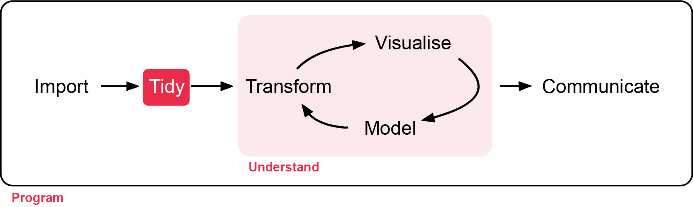
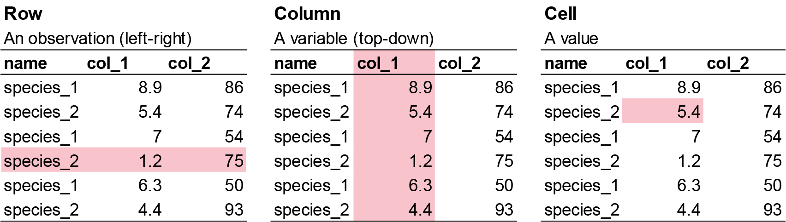
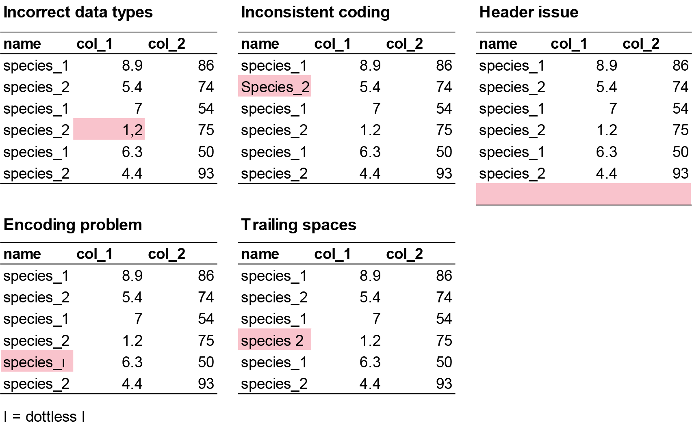
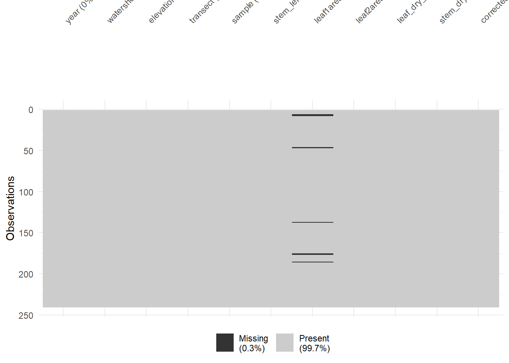
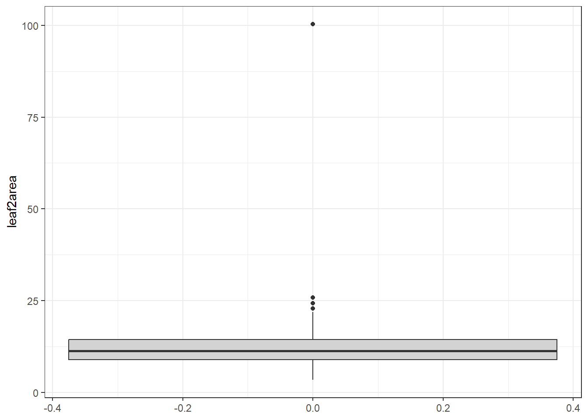
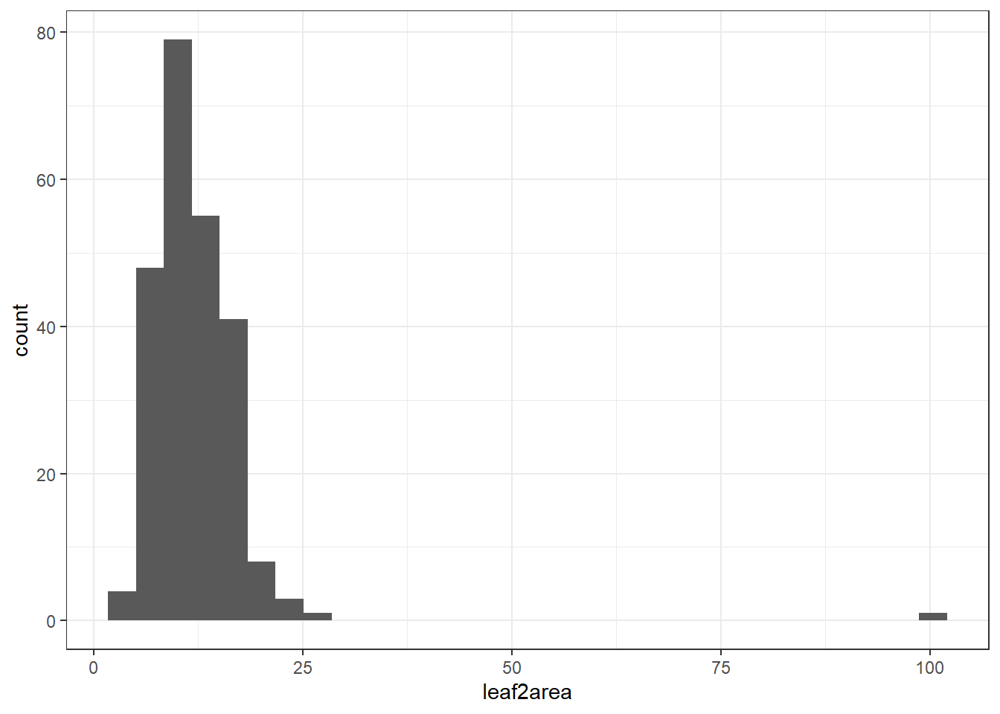
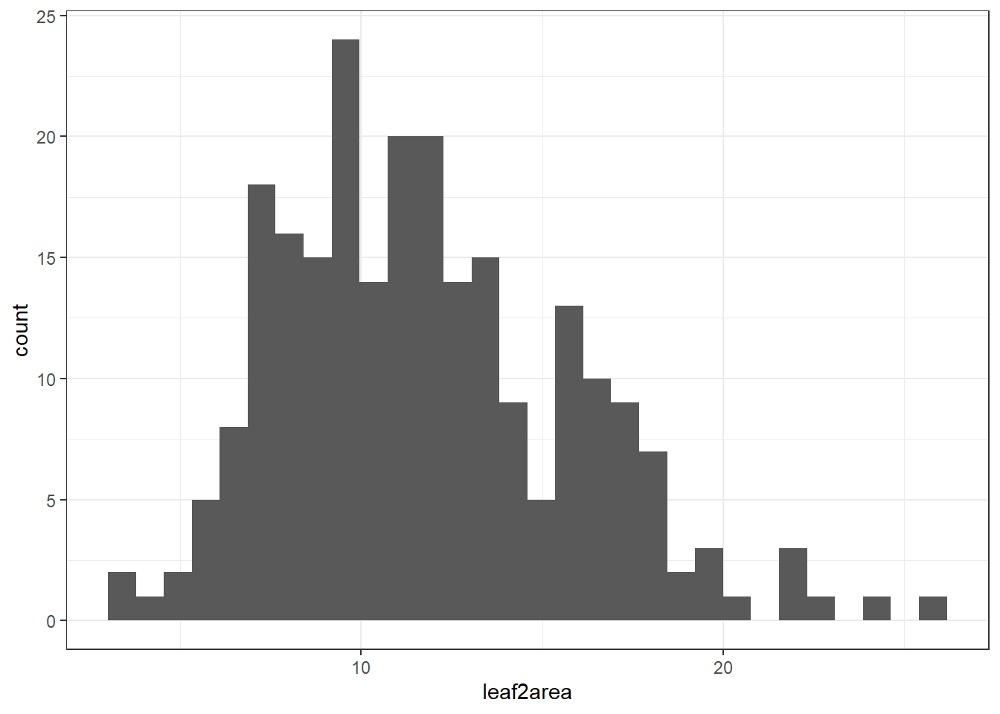

data %>% # first step is your data source
mutate() %>% # next step is what you want to do to the data
arrange() # the following step after you have done step 1 and so on.
# Without pipes
mean(log(c(1, 10, 100)))
# with pipes
c(1, 10, 100) %>%
log() %>%
mean()1 Quality Check
Week 1 - Quality checks and data exploration
In this section, you will learn how to check the quality of the raw data you imported, and steps to correct errors in the raw data. Workshop materials are available in the github repository ECS200.
All statistical techniques have in common the problem of ‘rubbish in, rubbish out’

Background Reading
How do we know the data is ready for analysis? Before we do any analysis, we need to check the raw data for the following:
- Check data structure and types: Use
str()andsummary()to ensure each column is the correct type (numeric, factor, character, etc.) and matches your expectations. e.g., Convert relevant character columns to factors for categorical analysis. - Inspect for missing values: Use
colSums(is.na()or visual tools (e.g.,naniar::gg_miss_var()orvisdat_viz_dat()) to identify missing data and decide how to handle it. - Check for duplicates: Ensure there are no unintended duplicate rows or IDs.
- Validate categorical variables: Confirm that categories are consistent and correctly formatted (e.g., all lower case, no extra spaces).
- Scan for outliers or impossible values: Look for values outside expected ranges (e.g., negative stem lengths, impossible dates).
- Review column names: Ensure column names are meaningful, have no spaces or special characters, and are consistent.
- Preview the data: Use plotting functions to visually inspect the data for obvious issues.
- Check for extra rows or columns: Sometimes, files have summary rows, notes, or empty columns that should be removed.
These steps help ensure your data is reliable, interpretable, and suitable for statistical analysis. Importantly, it makes you a trustworthy researcher!
Tidyverse
From here on, we will follow the tidyverse syntax for consistency. Tidyverse is a collection of R packages designed for data import, cleaning, manipulation, visualisation, and analysis
It is widely used in ecology because ecological datasets are often large, messy, spatial or temporal related, and often have nested replicates. Tidyverse provides a consistent and readable workflow.
Some important concepts include:
The pipe operator (either %>% or |>) passes the output of one step into the next step.
Pipes make ecological workflows easier to read because analyses often involve multiple steps. An example workflow includes
- Import data
- Filter sites
- Remove missing values
- Calculate summaries
- Plot results
As a general rule, tidyverse works best if the data looks like this:

- Each row = one observation
- Each column = one variable
- Each cell = one value
The way you record information in the field or in the lab is probably very different to the way you want your data entered into R.
In the field, you want tables that you can ideally draw up ahead of time and fill in as you go, and you will be adding notes and all sorts of information in addition to the data you want to analyse. For instance, if you monitor the height of seedlings during a factorial experiment using warming and fertilisation treatments, you might record your data like this:

Let’s say you want to run a test to determine whether warming and/or fertilisation affected seedling growth. You may know how your experiment is set up, but R doesn’t! At the moment, with 8 measures per row (combination of all treatments and species for one replicate, or block), you cannot run an analysis. On the contrary, tidy datasets are arranged so that each row represents an observation and each column represents a variable. In our case, this would look something like this:

This makes a much longer dataframe row-wise, which is why this form is often called long format. Now if you wanted to compare between groups, treatments, species, etc., R would be able to split the dataframe correctly, as each grouping factor has its own column.
Example dataset in R suitable for tidyverse:
# Here is the a an example species and mass using the data.frame function.
example_data <- data.frame(
site = c("A", "A", "B", "B"),
species = c("Skink", "Agamid", "Skink", "Frog"),
temperature = c(28, 31, 26, 22),
abundance = c(5, 2, 8, 4)
)Output:
example_data site species temperature abundance
1 A Skink 28 5
2 A Agamid 31 2
3 B Skink 26 8
4 B Frog 22 4Before We Start
Create a new R file. You don’t need to save the previous one. Click File > New File > R Script to start. Write the workshop name, your name, your student number, and date. Always do this when starting a new script.
# Week 1 workshop - Data quality check
# Written by Nicholas Wu, 1234578, 06/11/2026Exercise (5 min)
🧪 Get your workflow set up
Next, load your appropriate packages (the same tidyverse, and a one for visualising missing data called visdat at this stage), set your working directory via setwd(), and load the plant_calcium.csv via read_csv().
Lets call the imported data object plant_calcium_data this time.
Details on installing and loading R prackages, setting your working directory, and loading your csv file can be found in the pre-lab Introduction to R tutorial.
Show answer
# Install packages
#install.packages("visdat")
# Load relevent libraries
library(tidyverse)
library(visdat)
# Set your working directory
setwd("YOUR-LOCAL-DIRECTORY/")
# Load a CSV file
plant_calcium_data <- read_csv("plant_calcium.csv")Step 1: Data Quality Check
1.1. Initial check
This helps you spot if variables are coded incorrectly (e.g., numbers as characters or vice versa), which could be due to the researcher error before inporting the data. Some example mistakes include:
- Incorrect data types: Numeric columns may be read as character (text) if there are unexpected symbols, missing values coded inconsistently, or formatting issues (e.g. a column meant to be numbers may contain text or empty strings, causing R to treat it as character instead of numeric).
- Inconsistent coding: Categorical variables may be inconsistently labeled (e.g., “Male”, “male”, “M”), leading to multiple categories that should be merged.
- Header issues: Sometimes, the header row is missing or duplicated, or extra non-data rows are included at the top or bottom of the file.
- Encoding problems: Special characters (e.g., accents, non-English letters) may not display correctly if the file encoding is not specified or mismatched.
- Trailing spaces: Spaces at the start or end of strings can create unexpected categories or prevent proper matching.

For small datasets (like in this workshop) it is easier to make fixes directly from Excel and import the new .csv file. As before, we will check the data here first with the str() function.
# Check the structure of your data
str(plant_calcium_data)
glimpse(plant_calcium_data)
# Get a summary of all variables
summary(plant_calcium_data)If you would like to change the mistake in R directly, here is the code to do so using the recode() function. For example, let’s say you have three sites called A, B, C, but you noticed one site was mistakenly labelled as E. Here is how to change “E” to “B”.
# Create fake dataframe with A,B,C sites but one is mislabelled E.
fake_data <- data.frame(
site = c("A","A","A","B","E","B","C","C","C"),
species_1 = c(3, 7, 5, 2, 9, 4, 6, 1, 8)
)
fake_data %>%
dplyr::mutate(site = recode(site, "E" = "B")) # recode order by providing the variable you want to change "E", and the new variable name "B".Let’s say you have a character that is suppose to be a numeric value. e.g. “nine” instead of “9”, you will do the same thing as above but convert ‘chr’ to ‘num’ using as.numeric() function.
# Create fake dataframe with species numbers but one was not correctly labelled.
fake_data <- data.frame(
site = c("A","A","A","B","E","B","C","C","C"),
species_1 = c(3, 7, 5, 2, "nine", 4, 6, 1, 8)
)
# Create a new object called fake_clean_data that replaces 'nine' with '9' and change species_1 to numeric
fake_clean_data <- fake_data %>%
mutate(species_1 = recode(species_1, "nine" = "9"),
species_1 = as.numeric(species_1))
# check if species_1 is numeric in the new fake_clean_data
glimpse(fake_clean_data)Exercise (5 min)
🧪 Find the incorrect class in this dataset
I have created an example dataset called fake_data with three things wrong with it. Find the three issues in this dataset.
fake_data <- data.frame(
site = c("A", "B", "C", "A", "B", "A", "B", "C", "a", "B", "A", "B", "A", "B", "C", "C", "B", "A", "A", "C", "B", "C", "C", "A", "A", "A", "A", "B", "C", "C", "C"),
species_1 = c(7, 25, 30, 50, 38, 13, 5, 31, 34, 22, 41, 25, 22, 37, 39, 13, 45, 10, 40, 7, 28, 36, 19, 2, 12, 5, 16, 38, 27, 44, 44),
species_2 = c(9.3, 8.6, 0.8 , 7.5, 9 , 9.1, 4.3, 8.6, 0.1, 7.8, 1.2, 6.2, 0.4, 0.4, 7.4, 1.9, 8.3, 7.8, 2.9, 9.3, 9.1, 2.3, 6.3, 8.5, 6.5, 6.6, "1,7", 1.8, 8.4, 4.7, 4.7),
species_3 = c(190, 160, 70, 430, 310, 99, 530, 420, 371, 357, 198, 171, 463, 124, 254, 484, 435, 409, 122, 305, 410, 162, 473, 200, 401, 273, 421, 419, 293, 487, 487),
species_4 = c(2, 0, 4, 8, 6.7, 3, 7.2, 4.3, 2, NA, 10, 10, 6, 4, 8, 1.7, 1, 0, NA, 4, 6, 8.2, 10, 6, 2, 5, 10, 7, NA, NA, NA)
)What are the identified issues?
Show answer
- site should be factor, not character
- species_2 should be numeric, not character
- species_4 has 5 NA’s
1.2. Identify missing values
Missing data may appear as blanks, “NA”, “.”, or other placeholders. If not handled properly, this can cause errors or misinterpretation during analysis.

# Check for missing values in each column
colSums(is.na(plant_calcium_data))
# Visualise missing data pattern
visdat::vis_dat(plant_calcium_data)vis_dat() visualises the whole dataframe at once, and provides information about the class of the data input into R, as well as whether the data is missing or not.
The function vis_miss() provides a summary of whether the data is missing or not. It also provides the amount of missings in each columns.
# Visualise missing data pattern
visdat::vis_miss(plant_calcium_data)Option: Removing columns with missing values.
# Removes all rows with NA in the dataset
plant_data_clean <- plant_calcium_data %>%
drop_na()
# not recommended if NA is scattered across columns (e.g. leaf1area) because some important variables might be dropped out.
# If you only want to drop rows where NA is present in the elevation column only.
plant_data_clean <- plant_calcium_data %>%
drop_na(elevation)
# Run the vis_miss again on the clean data to check if the NA rows are removed.
visdat::vis_miss(plant_data_clean)
Exercise (5 min)
🧪 Identify and handle missing values in the fake_data dataset
- Which column contains missing variables?
- How many missing values are there?
- Remove rows with missing values and create a new object called
fake_data_clean. - Visualise the new
fake_data_cleanwithvisdat::vis_dat(fake_data_clean).
Show answer
# Check for missing values in each column
colSums(is.na(fake_data)) # species_4, # 5 missing values
# Visualise missing data pattern
visdat::vis_dat(fake_data)
# Drop rows where NA is present in the species_4 column only.
fake_data_clean <- fake_data %>%
drop_na(species_4)
# Run the vis_miss again on the clean data to check if the NA rows are removed.
visdat::vis_miss(fake_data_clean)1.3. Checking duplicates

There are two common duplicate types that can happen in your dataset.
- Row duplicates: where the values and names of two rows are identical 99% of the time, this is user error (e.g. copy pasted). These must be identified and removed.
sum(duplicated(plant_calcium_data)) # Returns the number of duplicate rows
# View the duplicate rows themselves
plant_data[duplicated(plant_calcium_data), ]In the plant_calcium_data, there are no row duplicates.
- Value duplicates: 90% of value duplicates in a column might be biologically realistic responses and is likely due to rounding of values during recording (e.g. values 2.5 and 2.5 might look duplicated due to user rounding. Actual values are 2.47 and 2.49). This is usually okay and can be kept in the dataset.
User error occurs if there is a pattern in duplicates (e.g. 2,2,6,1,2, 2,9,4,2,2,5,9). This can occur due to copy and pasting in the following row by accident.
You the researcher must decide whether these duplicate responses are real or due to user error.
sum(duplicated(plant_calcium_data$leaf_dry_mass)) # Returns the number of duplicate rows
plant_data[duplicated(plant_calcium_data$leaf_dry_mass) | duplicated(plant_calcium_data$leaf_dry_mass, fromLast = TRUE), ] # Returns all occurrences of duplicated numbers In the leaf_dry_mass column, there are 51 value duplicates.
Exercise (3 min)
🧪 Identify the duplicate row in the fake_data dataset
- Where is the duplicate row?
- Remove the duplicate row. Either manually in Excel (easy), or an R function (challenge).
- Are there other duplicate values and do you know if they are ecologically relevant duplicates (similar response) or user error?
Show answer
sum(duplicated(fake_data)) # 1 duplicate found
# View the duplicate rows themselves
fake_data[duplicated(fake_data), ] #1 duplicate row in row 31
sum(duplicated(fake_data$species_1)) # species_1 = 7
sum(duplicated(fake_data$species_2)) # species_2 = 6
sum(duplicated(fake_data$species_3)) # species_3 = 1
sum(duplicated(fake_data$species_4)) # species_4 = 15Step 2: Visualising Data
2.1 Check for outliers
Outliers aren’t inherently “bad,” but they can cause problems depending on the context and goals of your analysis. They can:
- Skew statistical results: A single extreme value can pull the mean far from the center, increase variability making data seem more spread than it really us, and can distrort the slope and intercept of linear models, leading to misleading predictions.
- Create obscure patterns: Hide clusters or trends that would otherwise be visible.
- Indicate user error: Data entry mistakes (e.g., typing 1000 instead of 100), measurement errors (e.g., faulty sensors), incorrect data merging (e.g., mixing units like metres and feet).
There are different ways we can check for outliers. See a more comprehensive page for more options. Here, we will create two common plots to check for outliers, and run some simple methods for detecting and removing outliers.
We can use the ggplot() function from the ggplot package to create a boxplot via geom_boxplot() showing the distribution of the lead2area data.
# Boxplot of leaf2area to detect potential outliers
ggplot(plant_data_clean, aes(y = leaf2area)) +
geom_boxplot(fill = "lightgrey") +
theme_bw()
Another way we can visualise outliers is with histograms via geom_histogram() or density plots via geom_density()
# Boxplot of height to detect potential outliers
ggplot(plant_data_clean, aes(x = leaf2area)) +
geom_histogram() +
theme_bw()`stat_bin()` using `bins = 30`. Pick better value `binwidth`.
Here you can see one clear outlier with a value above 100. All other values are below 25. You can either manually remove the outlier on Excel, or with the following code below.
Option: Remove outliers using the interquartile range (IQR) rule.
# View potential outliers using IQR rule
Q1 <- quantile(plant_data_clean$leaf2area, 0.25, na.rm = TRUE)
Q3 <- quantile(plant_data_clean$leaf2area, 0.75, na.rm = TRUE)
IQR <- Q3 - Q1
# Filter rows with height outside 1.5 * IQR range
outliers <- filter(plant_data_clean, leaf2area < (Q1 - 1.5 * IQR) | leaf2area > (Q3 + 1.5 * IQR))
outliersMake sure the numbers are biologically realistic based on intuition and comparing with the literature. If the values are unrealistic, it is a safe assumption to remove them.
2.2 Is data normally distributed?
This step is required to check if the data is suitable for certain types of analysis. Sometimes, transformation is required for certain data to meet the assumptions of certain statistical methods and improve the interpretability and performance of models. Many statistical techniques—like linear regression, ANOVA, and t-tests—assume that the data is normally distributed, has constant variance, and is linearly related (from your MAS183 - Statistical Data Analysis and MAS224 - Biostatistical Methods units). If the data is skewed, has outliers, or shows non-constant variance (heteroscedasticity), these assumptions are violated, which can lead to biased estimates, incorrect conclusions, or poor model fit.
By applying transformations such as logarithmic, square root, or Box-Cox, we can:
- Reduce skewness and make the distribution more symmetrical.
- Stabilise variance across levels of an independent variable.
- Improve linearity between variables.
- Minimise the influence of outliers.
Let’s check the distribution of leaf2area after removing that one outlier.
# remove values above 100
plant_data_clean <- plant_data_clean %>%
filter(leaf2area < 100)
ggplot(plant_data_clean, aes(x = leaf2area)) +
geom_histogram() +
theme_bw()`stat_bin()` using `bins = 30`. Pick better value `binwidth`.
Looks normally distributed to me! We will learn data transformation in next weeks workshop.
Assessment
Interpretation
Coding
We will use a modified plant_calcium.csv dataset called plant_calcium_task.csv for the next workshop. Here, you need to conduct a quality check and data exploration of this new dataset and fix any potential issues.
Download plant_calcium_task.csv from the GitHub page to your local folder (wherever you set your directory).
The plant_calcium_task.csv is in the ‘data’ folder.
Set up your working directory and load the plant_calcium_task.csv to R and give it am object name. If you like, you can call it plant_task_data_raw.
# Week 1 workshop - Data quality check
# Name, Student ID, date
# Load packages
library(tidyverse)
library(visdat)
# Set your working directory
setwd("YOUR-DIRECTORY")
# Load your data
plant_task_data_raw <- read_csv("plant_calcium_task.csv")To make it a bit easier for you, I have given you hints where the errors are so you dont have to look through every single column or every problem. But in your own dataset, you will need to thoroughly check your own data in the future.
Hints:
- Identify missing values in one of the numeric columns. Remember to check if you really need to remove these missing value rows or not.
- There is an inconsistent coding in one of the categorical variables. Correct the incorrect coding. You can do this on Excel, or in R but do comment which one you used.
- There are two numeric columns with outliers. One is biologically realistic, the other one is a data entry mistake. Decide which one is the data entry mistake and remove/correct that outlier.
- Create a clean version of the data after removing the errors as
plant_task_data_cleanand visualise one of the numeric columns as a density plot.
When you have completed the assessment, save your plant_task_data_clean data as a csv file. The plant_task_data_clean should have the NA’s and outliers removed, and watershed transect changed to factor.
Here’s how to do it in R with write.csv(). The location of the saved file should be your working directory.
write.csv(plant_task_data_clean, file = "plant_task_data_clean.csv")Optional - For the adventurous folks
Here we will start thinking about writing code efficiently. For example, you would have noticed by now that whatever raw data we load in R, any categorical columns are automatically listed as characters. So you can write a code that both loads the data and change the characters to factors in the same line of code (e.g. using the dplyr::mutate() function). Load the plant_calcium_task.csv and change categorical variables from character and factor.
Repeat the same assessment as above, but instead of correcting the errors by editing them on Excel, do all the corrections within the R environment. Visualise the clean version of the the data with a density plot but separate the density by the treatment groups (reference and W1 variables).
Additional Resource
- Loading other file types (if not .csv).
- How to rename factor levels in R.
- CrashCourse Statistics video on Plots, Outliers, and Justin Timberlake, with examples of went to remove outliers.